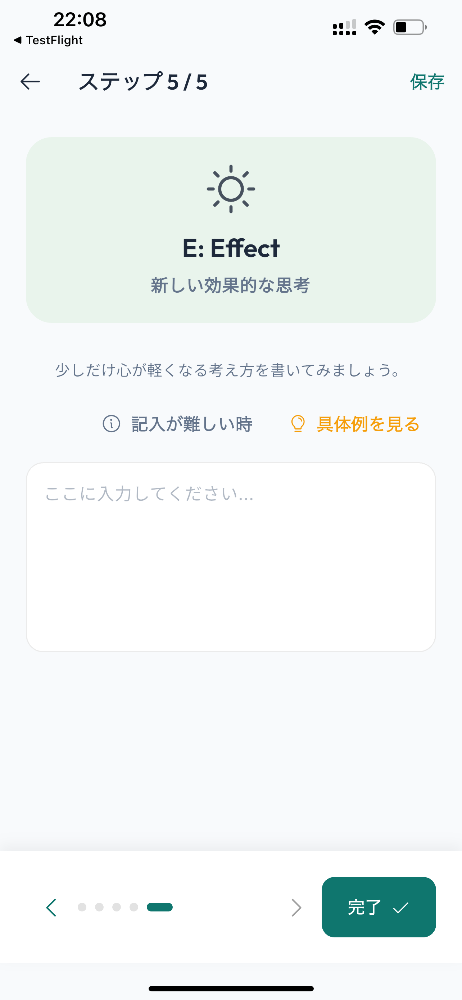
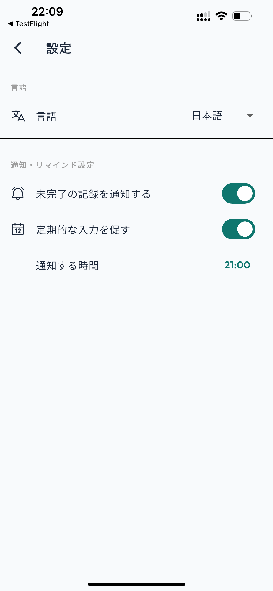

ABCDE理論ノートとは？
About ABCDE Theory Note
ABCDE理論ノートは、 ABCDEモデルを使って、自分の考えや感情を 整理するためのセルフケア・ジャーナリングアプリです。
何か嫌な出来事があったとき、 「何が起きたのか」だけでなく、 「その出来事を自分はどう受け止めたのか」 「その結果、どのような感情や行動につながったのか」 を順番に書き出していきます。
頭の中だけで考え続けるのではなく、 文章として書き出すことで、 自分の考え方を少し離れた視点から 見直すきっかけを作ります。
ABCDE Theory Note is a self-care journaling app that helps you organize your thoughts and emotional responses using the ABCDE framework.
Instead of focusing only on what happened, the framework encourages you to examine the event, your interpretation of it, the resulting response, and possible alternative perspectives.
ABCDE理論とは？
What is the ABCDE Framework?
ABCDEモデルでは、出来事と、その出来事に対する 自分の捉え方や反応を分けて考えます。
The ABCDE framework separates an event from the way we interpret and respond to it.
出来事
Activating Event
何が起きたのかを整理します。
What happened?
思い込み・考え
Belief
出来事をどう受け止めたかを整理します。
How did you interpret the event?
結果・反応
Consequence
感情や行動などの反応を整理します。
What emotions or actions followed?
反論・再検討
Disputation
考え方を別の角度から見直します。
Examine the belief from another perspective.
効果・変化
Effect
新しい捉え方や変化を記録します。
Record the new perspective or resulting change.
ABCDE理論の具体例
A Simple ABCDE Example
例えば、「仕事で提出した資料について、 上司から修正を求められた」という場面を考えてみます。
- A：出来事
- 上司から資料の修正を求められた。
- B：考え
- 「自分は仕事ができないと思われているのではないか」 と考えた。
- C：結果・反応
- 不安になり、その後の仕事にも自信が持てなくなった。
- D：反論・再検討
- 「修正依頼は資料をより良くするためのものかもしれない。 すべての修正依頼が能力の否定というわけではない」 と考え直してみる。
- E：効果・変化
- 修正点を具体的に確認し、 次回に活かそうという考え方ができるようになった。
Imagine that your manager asks you to revise a document you submitted.
- A: Activating Event
- Your manager asks you to revise a document.
- B: Belief
- You think, "Maybe they think I am not good at my job."
- C: Consequence
- You feel anxious and lose confidence.
- D: Disputation
- You reconsider the thought: "The feedback may simply be intended to improve the document."
- E: Effect
- You can focus on the specific feedback and think about how to use it next time.
ABCDE理論ノートの使い方
How to Use the App
出来事を書く
Describe the event
何が起きたのかを、できるだけ具体的に記録します。
Describe what happened as specifically as possible.
考えを書く
Identify your belief
その出来事をどう受け止めたのかを振り返ります。
Write down how you interpreted the event.
反応を書く
Record the consequence
感情や行動など、自分に起きた反応を整理します。
Record your emotional or behavioral response.
考え直す
Reconsider
別の可能性や視点がないか考えてみます。
Consider alternative explanations or perspectives.
変化を記録
Record the effect
新しく気づいたことや考え方の変化を記録します。
Record what you noticed or how your perspective changed.
アプリの主な機能
Main Features
ABCDE理論を基礎から学べる
Learn the ABCDE framework
ABCDEの各ステップについて、 簡単な説明や考え方を確認できます。 初めてABCDEモデルを使う場合でも、 各項目の意味を確認しながら 自分の状況を整理できます。
Learn the basic concepts behind each step of the ABCDE framework with simple explanations and guidance.
1ステップずつ入力できる
Step-by-step journaling
AからEまでを一度に考える必要はありません。 1つずつ順番に入力することで、 頭の中にある考えを整理しながら 記録できます。 入力に迷ったときのヒントや例も用意しています。
You do not need to organize everything at once. Work through each step individually and use hints and examples when you need help.

リマインダーで振り返りをサポート
Reflection reminders
リマインダーを設定して、 定期的に自分の考えを振り返る時間を 作ることができます。 忙しい日常の中でも、 自分自身を振り返るきっかけとして利用できます。
Set reminders to create regular opportunities to reflect on your thoughts and experiences.

こんなときに活用できます
When Can You Use It?
- 仕事や学校で嫌なことがあったとき
- 人間関係について考えを整理したいとき
- 失敗したことを何度も考えてしまうとき
- 自分の考え方を客観的に振り返りたいとき
- 日記やジャーナリングを習慣にしたいとき
- 定期的に自分自身を振り返る時間を作りたいとき
- After a difficult experience at work or school
- When you want to organize your thoughts about relationships
- When you keep thinking about a mistake
- When you want to look at your thoughts from another perspective
- When you want to build a journaling habit
- When you want regular time for self-reflection
よくある質問
Frequently Asked Questions
ABCDE理論とは何ですか？
認知行動療法そのものを受けられるアプリですか？
どのような人におすすめですか？
書く内容が思いつかない場合はどうすればよいですか？
リマインダーは利用できますか？
無料で利用できますか？
What is the ABCDE framework?
Does the app provide cognitive behavioral therapy?
Who is the app for?
What if I don't know what to write?
Does the app support reminders?
Is the app free?
ご利用にあたって
Important Information
医療・治療を目的としたアプリではありません。
ABCDE理論ノートは、日常生活における 思考の整理やセルフリフレクションを サポートすることを目的としています。 医療上の診断、治療、カウンセリング、 緊急時の支援などを提供するものではありません。 心身の不調が続いている場合や、 強い苦痛を感じている場合は、 自己判断だけで対処せず、 医療機関や専門家への相談をご検討ください。
This app is not intended to provide medical diagnosis or treatment.
ABCDE Theory Note is designed to support everyday self-reflection and thought organization. It does not provide medical diagnosis, therapy, counseling, or emergency support. If you are experiencing significant or persistent distress, consider seeking help from an appropriate healthcare professional.
関連キーワード
Related Topics
ABCDE理論、ABCDEモデル、認知行動療法、 CBT、セルフケア、ジャーナリング、 思考整理、感情、ストレス管理、 自己理解、日記、マインドフルネス、 セルフリフレクション
ABCDE framework, ABCDE model, cognitive behavioral therapy, CBT, self-care, journaling, thought organization, emotions, stress management, self-reflection, mindfulness